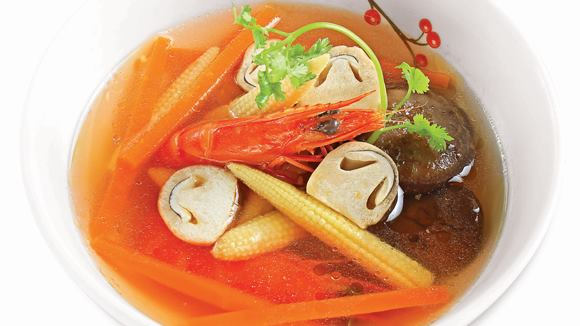

Bông hẹ cuộn tôm nấu nấm

Nguyên liệu
- 300g tôm sú
- 200g bông hẹ
- 100g nấm rơm
- 2 thìa cà phê hạt nêm từ Thịt Thăn, Xương Ống và
Tủy - Bổ sung Vitamin A - Bổ sung Vitamin A
- 1 thìa cà phê nước mắm chấm
- Khẩu phần 4 người
- Chuẩn bị 20 phút
- Thực hiện 15 phút
Hướng dẫn thực hiện
- Tôm sú cắt bớt đầu, lột vỏ, chừa đuôi, chẻ lưng lấy chỉ đen. Bông hẹ
chần sơ qua nước sôi. Cuộn bông hẹ vào lưng tôm, làm lần lượt đến hết.
- Nấm rơm rửa sơ nước muối, bổ đôi.
- Đun sôi 700ml nước, cho tôm đã cuộn vào nấu chín, cho nấm rơm vào,
khoảng 10 phút sau nêm hạt nêm từ Thịt Thăn, Xương Ống và Tủy - Bổ
sung Vitamin A, nước mắm chấm vào, nếm vừa ăn, tắt bếp.
- Múc canh ra tô, dùng với cơm.